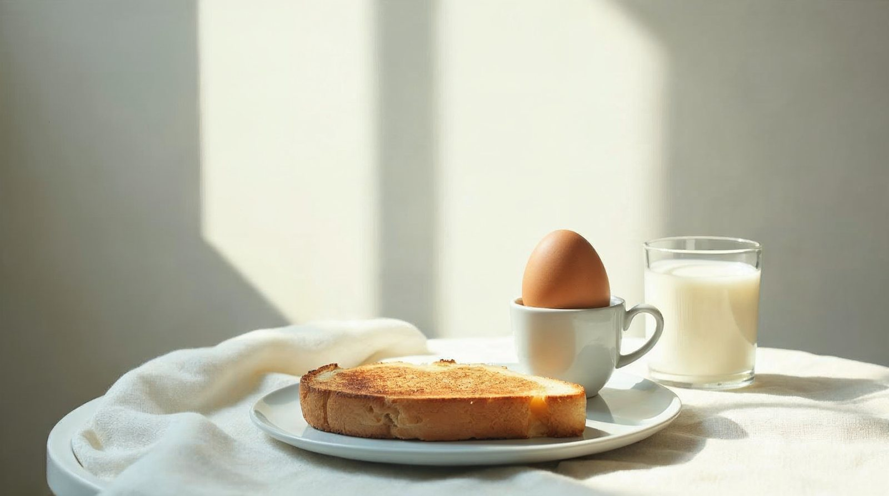
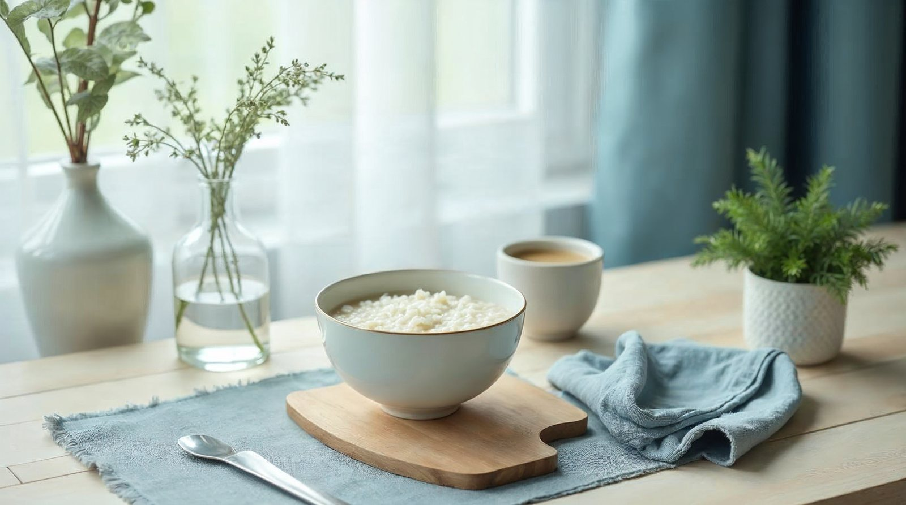

이종호 한의사 감수좋은꿈참사랑한의원 대표원장 (한의사 면허번호 19769)발행 2026-11-24 · 수정 2026-11-26
이 글의 차례
- 왜 이런 불편이 생길 수 있나요
- 왜 빈속일 때 더 쓰릴까요?
- 속쓰림은 어떤 모습으로 나타나나요?
- 비슷해 보이지만 따로 살펴야 하는 경우
- 상황별 예시
- 스스로 점검해 보세요
- 먼저 이렇게 여쭙니다
- 일상에서 먼저 해 볼 수 있는 것
- 아침을 먹으면 오히려 속이 더 불편한 분은요?
- 잠과 아침 입맛은 왜 함께 봐야 할까요?
- 바쁜 아침에 먹기 쉬운 것들
- 커피는 어떻게 조절하면 좋을까요?
- 수업 중에 속이 쓰리기 시작하면 어떻게 하나요?
- 시험 긴장과 속쓰림은 어떻게 이어져 있나요?
- 몇 주에 걸쳐 이렇게 바꿔 갑니다
- 왜 전날 저녁부터 살펴야 할까요?
- 한의원에서 함께 살필 수 있는 경우
- 이렇게 기록해 오시면 상담이 쉬워집니다
- 이런 증상은 먼저 확인이 필요합니다
- 관련 글
몇 숟가락이라도 먼저 먹고 커피는 그 뒤에 마시는 것만으로도 오전 속쓰림을 줄이는 데 도움이 될 수 있습니다. 아침 수업에 늦지 않으려고 밥 대신 커피 한 잔을 들고 나서는 수험생이 많고, 오전 수업 중간에 속이 쓰리고 울렁거려 집중이 흐트러진다는 이야기를 자주 듣습니다.
아침 수업에 맞춰 뛰어나가는 길에 무언가 챙겨 먹기가 얼마나 번거로운지요. 그래서 저는 거창한 아침상을 권하지 않습니다. 빈속을 잠깐 덮어 주는 것만으로도 오전 두세 시간이 달라질 수 있다는 점을 말씀드리고 싶습니다.
왜 이런 불편이 생길 수 있나요
- 빈속에 커피처럼 자극이 있는 음료를 마시면 속이 쓰리거나 울렁거리는 분이 있습니다.
- 전날 밤늦게 먹고 자면 아침에 속이 더부룩해 아침을 거르게 되고, 그 빈속이 다시 쓰림으로 이어지기 쉽습니다.
- 시험 긴장이 클 때 속쓰림을 더 자주 느낀다는 분도 있습니다.
- 잠이 부족하면 아침 입맛이 떨어져 빈속으로 하루를 시작하는 흐름이 생깁니다.
- 오전 내내 고개를 숙이고 앉아 있으면 배가 눌려 쓰림이나 신물이 더 느껴진다는 분도 있습니다.
왜 빈속일 때 더 쓰릴까요?
위는 음식이 들어오지 않아도 하루 리듬에 따라 위산을 냅니다. 음식이 있으면 위산이 음식과 섞여 묽어지지만, 오래 비어 있으면 그 자극을 그대로 느끼기 쉬워 쓰리고 따가운 느낌으로 다가옵니다.
여기에 커피를 빈속에 마시면 위를 자극해 쓰림이 커진다는 분이 많습니다. 한의학에서는 이런 모습을 위에 열이 차거나 비위가 약해진 상태로 보기도 하고, 입이 쓰고 마르는지, 명치가 답답한지, 손발이 찬지 같은 다른 신호와 함께 살핍니다.
속쓰림은 어떤 모습으로 나타나나요?
같은 "속이 쓰리다"라도 어디가 어떻게 불편한지에 따라 살필 방향이 조금씩 달라집니다. 진료 때 아래 가운데 어디에 가까운지 말씀해 주시면 도움이 됩니다.
- 명치가 쓰리고 배가 고플 때 더하다가 무언가 먹으면 잠시 가라앉는 경우
- 가슴 뒤쪽이 타는 듯하고 신물이나 쓴물이 목까지 올라오는 경우
- 쓰림보다 울렁거림과 메스꺼움이 앞서는 경우
- 트림이 잦고 명치가 꽉 막힌 듯 답답한 경우
쓰림이 하루 중 언제 시작해 언제 가라앉는지도 중요한 단서입니다. 오전에만 쓰리고 점심 뒤 편해진다면 빈속과 커피의 영향이 클 수 있고, 저녁이나 누웠을 때 심하다면 식사 시각과 자세를 더 살핍니다.
두 가지가 함께 오는 분도 많습니다. 예를 들어 빈속 커피 뒤 명치가 쓰리고, 점심을 급하게 먹은 뒤에는 신물이 올라오는 식으로 시간대마다 모습이 바뀌기도 합니다.
비슷해 보이지만 따로 살펴야 하는 경우
아침 속쓰림은 식사 습관과 관련된 경우가 많지만, 비슷하게 느껴지는 다른 불편도 있습니다. 밥을 먹은 뒤 오른쪽 윗배가 아프고 등까지 뻗친다면 위가 아닌 다른 장기의 문제일 수 있어 검사를 먼저 받아 보셔야 합니다.
진통제를 자주 먹은 뒤로 쓰림이 생겼다면 약과의 관계를 처방한 의사나 약사와 확인해 주세요. 이런 경우가 아니라면 아침 순서와 전날 저녁을 바꾸는 것부터 시작해 볼 수 있습니다.
상황별 예시
- 예를 들어 아침 아홉 시 수업에 맞추려 일어나자마자 편의점 아메리카노를 들고 나서는 경우, 열 시쯤 명치가 쓰리기 시작해 수업 후반부 내용이 잘 들어오지 않을 수 있습니다. 같은 커피라도 바나나 하나를 먼저 먹고 마시는 것부터 바꿔 볼 수 있습니다.
- 예를 들어 밤 열두 시에 라면을 먹고 한 시에 잠든 경우, 아침에 속이 더부룩해 아무것도 넘어가지 않을 수 있습니다. 이때는 아침을 억지로 먹기보다 전날 야식 시각을 당기는 것이 먼저입니다.
- 예를 들어 모의고사가 있는 날만 유난히 속이 쓰린 경우, 음식보다 긴장의 영향이 클 수 있습니다. 시험 전 아침에는 평소 먹던 익숙한 음식을 조금 먹고, 입실 전 천천히 내쉬는 호흡을 몇 번 해 보세요.
스스로 점검해 보세요
- 일주일에 나흘 이상 아침을 거른다
- 일어나서 처음 입에 넣는 것이 커피다
- 커피를 하루 세 잔 넘게 마신다
- 전날 밤 열한 시 이후에 먹는 날이 많다
- 오전 열 시 전후로 속이 쓰리거나 울렁거린다
- 시험이나 발표가 있는 날 속쓰림이 더 심하다
하나하나는 사소해 보여도 여러 개가 겹치면 위가 쉴 틈이 줄어듭니다. 특히 빈속 커피와 늦은 야식이 함께 있다면 그 둘부터 손보는 것이 좋습니다.
세 가지 이상 해당된다면 아침 순서부터 바꿔 보세요. 두세 주 바꿔 봐도 같은 불편이 이어진다면 진료 때 이 목록을 함께 보며 이야기를 나누면 좋습니다.

먼저 이렇게 여쭙니다
- 아침 식사를 일주일에 몇 번 하나요?
- 빈속에 커피를 마시나요?
- 속이 쓰린 시간은 주로 언제인가요?
- 밤늦게 먹고 자는 날이 많나요?
- 커피는 하루에 몇 잔 정도 드시나요?
- 맵거나 기름진 음식을 먹은 다음 날 더 쓰린가요?
- 복용 중인 약이나 진통제가 있나요?
이 질문들로 쓰림의 출발점이 빈속인지, 전날 야식인지, 긴장인지를 나눠 봅니다. 출발점이 다르면 먼저 바꿀 것도 달라지기 때문에, 기억나는 대로 편하게 말씀해 주시면 됩니다.
일상에서 먼저 해 볼 수 있는 것
- 바나나, 두유, 죽처럼 간단한 아침이라도 먹기
- 커피는 무언가 먹은 뒤에 마시기
- 전날 밤늦은 야식 줄이기
- 따뜻한 물 한 잔으로 아침 시작하기
- 아침 커피는 한 잔으로 정하고 오후에는 카페인 없는 음료로 바꾸기
- 먹고 나서 바로 엎드리거나 몸을 깊이 숙이지 않기
아침을 먹으면 오히려 속이 더 불편한 분은요?
아침을 먹으면 오히려 더부룩하고 배가 아프다는 분도 계십니다. 이런 경우는 아침 자체보다 무엇을, 얼마나, 얼마나 빨리 먹는지를 먼저 봅니다.
- 차갑거나 기름진 음식 대신 미지근하고 부드러운 음식부터 시작하기
- 한꺼번에 먹지 말고 집에서 반, 학원 가는 길이나 쉬는 시간에 반으로 나눠 먹기
- 일어나자마자 먹기보다 씻고 옷을 입은 뒤에 먹기
- 우유를 마시면 배가 아프거나 설사를 한다면 두유나 다른 음식으로 바꾸기
일어난 직후에는 몸이 아직 덜 깨어 있어 무엇이든 부담스럽게 느껴질 수 있습니다.
누구에게나 좋다는 음식이 어떤 분에게는 맞지 않을 때도 있습니다. 잡곡이 좋다는 말만 듣고 드시다가 속이 불편해지는 분도 계셔서, 저는 아침 메뉴도 한 분 한 분 따로 짚어 드리려고 합니다.
잠과 아침 입맛은 왜 함께 봐야 할까요?
잠이 짧거나 얕은 날은 아침에 입맛이 없고 입이 쓰다는 이야기를 자주 듣습니다. 새벽까지 공부하고 서너 시간 자고 나오면 몸이 아직 밤이라고 느껴 음식을 받아들일 준비가 덜 되어 있을 수 있습니다.
그래서 저는 속쓰림으로 오신 분께도 잠드는 시각과 깨는 시각을 여쭙습니다. 잠이 부족하면 식욕 조절도 흔들릴 수 있어, 아침에는 입맛이 없다가 밤에는 허기가 몰려오기도 합니다. 잠과 아침 식사, 오전 속쓰림은 하나로 이어진 고리라고 생각하시면 좋겠습니다.
바쁜 아침에 먹기 쉬운 것들
아침을 못 먹는 가장 큰 이유는 시간과 입맛입니다. 그래서 준비가 거의 필요 없고 들고 나갈 수 있는 것 위주로 고르면 오래 이어 가기 쉽습니다.
- 바나나, 삶은 달걀, 두유나 우유처럼 바로 먹을 수 있는 것
- 전날 밤 미리 사 둔 죽이나 누룽지
- 식빵 한 쪽에 치즈나 달걀을 얹은 것
- 미지근한 요거트나 두부 같은 부드러운 것
입맛이 전혀 없는 날은 따뜻한 물 한 잔과 바나나 반 개처럼 아주 작게 시작해도 괜찮습니다. 몇 주 이어 가며 아침 배고픔이 어떻게 달라지는지 지켜보세요.
커피는 어떻게 조절하면 좋을까요?
수험 생활에서 커피를 끊기는 쉽지 않습니다. 끊기보다 마시는 순서와 양, 시각을 바꾸는 쪽이 현실적입니다.
- 연한 커피로 바꿔 보기
- 하루 잔 수를 정해 두고 오후 세 시 이후에는 카페인 없는 음료로 바꾸기
- 에너지 음료와 커피를 같은 날 겹쳐 마시지 않기
오후 늦게 마신 커피는 밤잠을 얕게 하고, 얕은 잠은 다음 날 아침 입맛을 떨어뜨리기 쉽습니다. 커피 시각을 당겨 보고 그 주의 속과 잠이 어땠는지 함께 적어 보세요.
수업 중에 속이 쓰리기 시작하면 어떻게 하나요?
이미 수업이 시작되어 속이 쓰리기 시작했다면 그 자리에서 할 수 있는 것부터 해 봅니다. 크게 나아지게 하는 방법이라기보다 오전을 버틸 수 있게 돕는 작은 습관입니다.
- 쉬는 시간에 미지근한 물을 몇 모금 천천히 마시기
- 가방에 넣어 둔 크래커나 바나나를 조금 먹기
- 커피나 탄산음료를 더 마시지 않기
- 허리를 펴고 앉아 배가 눌리지 않게 하기
- 숨을 길게 내쉬며 어깨와 배의 힘을 풀기
점심은 쓰린 속을 달래려 급하게 많이 먹기보다 평소보다 조금 천천히, 맵고 기름진 메뉴는 피해서 드시는 것을 권합니다.
시험 긴장과 속쓰림은 어떻게 이어져 있나요?
시험이 다가올수록 아침에 속이 더 쓰리다는 수험생이 많습니다. 긴장하면 몸은 소화보다 버티는 쪽에 힘을 쓰게 되어 위의 움직임이 흐트러지고, 같은 커피 한 잔에도 더 예민하게 반응하기 쉽습니다.
한의학에서는 걱정과 긴장이 오래 이어지면 간의 기운이 뭉쳐 위를 눌러, 명치가 답답하고 신물이 오르며 한숨이 잦아진다고 설명하기도 합니다. 그래서 속쓰림으로 오신 분께 잠, 꿈, 한숨, 가슴 두근거림도 함께 여쭙습니다.
몇 주에 걸쳐 이렇게 바꿔 갑니다
한꺼번에 아침 식사, 커피, 야식을 모두 바꾸려 하면 오래가기 어렵습니다. 커피 전에 무엇이든 한 입 먹기부터 시작하고, 그게 익숙해지면 야식 시각을 당기는 식으로 한 주에 하나씩 더해 보세요.
일주일 가운데 사나흘만 지켜도 괜찮습니다. 지킨 날과 못 지킨 날의 속 상태를 비교해 보면 다음 단계로 넘어갈 힘이 생깁니다.
왜 전날 저녁부터 살펴야 할까요?
아침 속쓰림의 출발점은 전날 밤인 경우가 많습니다. 늦게 먹고 바로 누우면 밤새 위가 쉬지 못해 아침에 더부룩하고, 그래서 아침을 거르면 빈속 커피로 이어지는 고리가 생깁니다.
저녁은 밤 공부 전에 먹고, 잠들기 두세 시간 전에는 먹는 것을 끝내 두는 것이 좋습니다. 공부를 마친 뒤 허기가 지면 물 한 잔을 마시고 잠시 기다려 보세요. 누웠을 때 신물이 올라온다면 베개를 조금 높이는 것도 도움이 될 수 있습니다.
한의원에서 함께 살필 수 있는 경우
- 빈속에 속이 자주 쓰린 경우 식사 습관과 소화 상태를 함께 살핍니다.
- 긴장하면 속이 더 쓰린 경우 마음의 긴장과 잠을 함께 살핍니다.
- 입맛이 없어 아침을 못 먹는 경우 저녁 식사 시각과 잠을 함께 살핍니다.
좋은꿈참사랑한의원에서는 모든 분께 맥부터 짚으며 불편이 생기는 시간대와 식사 습관을 여쭙고, 필요하다고 판단될 때 복진과 설진으로 배와 혀의 상태를 살핍니다. 침이나 한약 상담 가운데 지금 상태에 맞는 방법을 정하고, 귀가 전에는 일주일 동안 기록해 볼 점을 알려 드립니다.
혀를 보면 설태가 거의 없는데도 속쓰림이 이어지는 분이 있습니다. 그래서 혀 모습은 맥과 이야기에 더해 보는 참고로 삼고, 내시경 결과가 있으면 함께 놓고 봅니다.
저는 잘 먹고, 잘 싸고, 잘 자고, 마음 편하고, 몸 따뜻하게, 이 다섯 가지를 몸이 회복하는 바탕으로 봅니다. 아침을 거르는 습관은 그중 '잘 먹고'가 흔들린 모습이라, 속쓰림과 함께 대변과 잠, 손발의 온기도 여쭙습니다.
한약을 상담할 때는 지금 드시는 위장약이나 다른 약을 먼저 확인해 겹치지 않게 합니다. 처방받은 약은 처방한 의사와 상의 없이 줄이거나 끊지 마세요.

이렇게 기록해 오시면 상담이 쉬워집니다
- 일주일 중 아침을 먹는 날과 메뉴
- 커피를 마시는 시각과 잔 수, 빈속인지 여부
- 속이 쓰린 시간대와 신물·트림 여부
- 전날 저녁과 야식을 먹은 시각, 시험이나 발표처럼 긴장되는 날의 차이
휴대폰 메모에 "7:40 바나나, 8:20 커피, 10:10 쓰림 약간"처럼 시각과 함께 한 줄씩 적으면 충분합니다. 아침을 먹은 날과 거른 날의 차이가 눈에 보이면 무엇을 바꿀지 스스로도 정하기 쉬워집니다.
다음에 오시면 일어나서 처음 입에 넣은 것이 무엇이었는지, 전날 마지막으로 드신 시각은 언제였는지부터 여쭙겠습니다. 내일 아침에는 커피 전에 바나나 반 개, 그 정도면 충분한 시작입니다.
이런 증상은 먼저 확인이 필요합니다
- 검은 변이나 피 섞인 구토, 이유 없는 체중 감소가 있는 경우
- 조이는 듯한 가슴 통증, 또는 걷거나 계단을 오를 때 심해지는 가슴 통증
이런 신호가 있으면 한의원보다 가까운 병원이나 응급실을 먼저 찾으세요.
관련 글
- 속쓰림과 신물이 오래 갈 때 어떤 점을 살펴보고, 언제 검사를 받아야 하나요?
- 시험 당일 아침 식사와 카페인은 어떻게 계획하면 되나요?
- 낮에는 끼니를 거르다 밤에 몰아 먹는 수험생은 무엇을 점검하나요?

여쭙는 것
- 아침 식사를 일주일에 몇 번 하나요?
- 빈속에 커피를 마시나요?
- 속이 쓰린 시간은 주로 언제인가요?
생활에서 해 볼 것
- 바나나, 두유, 죽처럼 간단한 아침이라도 먹기
- 커피는 무언가 먹은 뒤에 마시기
- 전날 밤늦은 야식 줄이기
한의원에서 함께 살필 것
- 빈속에 속이 자주 쓰린 경우 식사 습관과 소화 상태를 함께 살핍니다.
- 긴장하면 속이 더 쓰린 경우 마음의 긴장과 잠을 함께 살핍니다.
- 입맛이 없어 아침을 못 먹는 경우 저녁 식사 시각과 잠을 함께 살핍니다.
먼저 확인이 필요한 신호
- 검은 변이나 피 섞인 구토, 이유 없는 체중 감소가 있는 경우
- 조이는 듯한 가슴 통증, 또는 걷거나 계단을 오를 때 심해지는 가슴 통증
한눈에 보는 표
| 구분 | 핵심 |
|---|---|
| 여쭙는 것 | 아침 식사를 일주일에 몇 번 하나요? 빈속에 커피를 마시나요? |
| 생활에서 해 볼 것 | 바나나, 두유, 죽처럼 간단한 아침이라도 먹기 커피는 무언가 먹은 뒤에 마시기 |
| 한의원에서 함께 살필 것 | 빈속에 속이 자주 쓰린 경우 식사 습관과 소화 상태를 함께 살핍니다. 긴장하면 속이 더 쓰린 경우 마음의 긴장과 잠을 함께 살핍니다. |
| 먼저 확인이 필요한 신호 | 검은 변이나 피 섞인 구토, 이유 없는 체중 감소가 있는 경우 조이는 듯한 가슴 통증, 또는 걷거나 계단을 오를 때 심해지는 가슴 통증 |
자주 묻는 질문
위장약을 계속 먹어도 되나요?
처방받은 약은 처방한 의사와 상의해 조절하고, 임의로 늘리거나 끊지 않습니다.
우유를 마시면 속쓰림이 가라앉나요?
잠깐 편하다는 분도 있지만 사람마다 다릅니다. 무엇을 먹었을 때 편하고 불편했는지 적어 오시면 맞는 아침을 함께 찾아봅니다.
디카페인 커피로 바꾸면 괜찮을까요?
카페인이 줄어 편하다는 분도 있지만 커피 자체가 자극이 되는 분도 있습니다. 빈속을 피하는 것부터 먼저 해 보세요.
진료 시간은 어떻게 되나요?
좋은꿈참사랑한의원은 평일 09:30~20:00(점심 13:00~14:00), 토·일·공휴일 09:30~15:00(점심시간 없음)에 진료합니다.
좋은꿈참사랑한의원은 재진 때 지난번 이야기부터 이어서 여쭙니다. 진료시간과 예약은 오시는 길에서 확인하세요.
어디서 상담받을 수 있나요?
좋은꿈참사랑한의원은 서울 동작구 만양로2길 2 신성빌딩 3층·5층(서울 동작구 상도동, 7호선 상도역 3번 출구 근처)에 있습니다. 한의사 3명(이종호 대표원장, 조영기 수석진료원장, 정원영 진료원장)이 진료합니다. 진료시간은 평일 09:30~20:00(점심 13:00~14:00), 토·일·공휴일 09:30~15:00이며, 방문 전 전화로 확인을 권합니다. 예약은 네이버 예약, 카카오톡 상담, 전화 02-815-7510로 받습니다.
이 글은 일반적인 건강 정보이며 개인의 진단이나 치료를 대신하지 않습니다. 증상이 있거나 복용 중인 약이 있다면 진료를 통해 확인하세요. 치료 효과는 개인마다 다를 수 있습니다.
작성 기준: 일반적으로 알려져 있는 건강 정보를 참고해 정리했습니다(대표원장 감수). 증상 기록은 1~2주 동안 하루 1회, 비슷한 시간에 적어 오시면 지난 상태와 비교하기 쉽습니다.